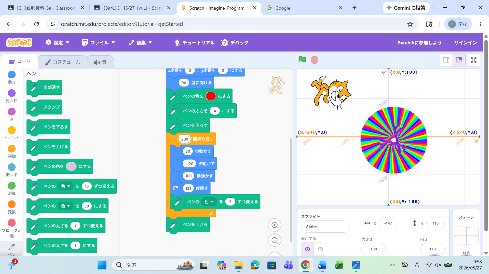
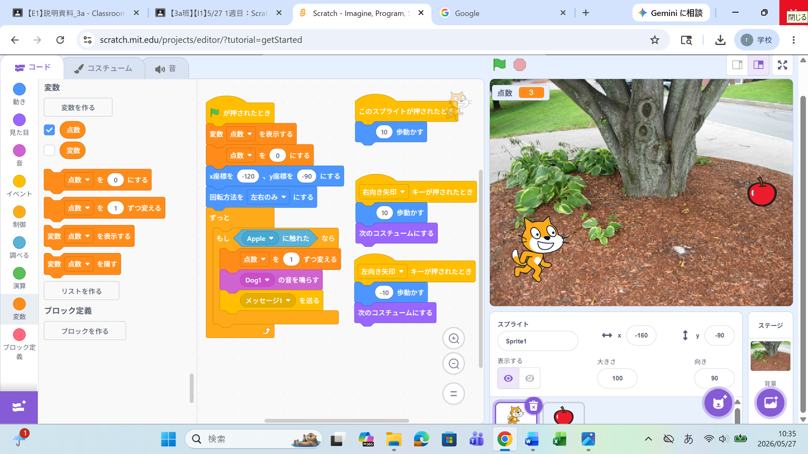

1週目のレポート ： 公大高専１年実習I-1
3a班12番 川原碧
第1週目
1-1 サイエンスアート

1.内容
回転する角度を60°みたいなきれいな数字にするのではなく、13°みたいな微妙な数字にすることでラインがだんだんずれていって、不思議な形になる。
2.感想
何回も回転させることで色が重なっていって、壊れたテレビの画面みたいな色になるのが面白かった。
回転の角度を59°とかにすることで真ん中のほうの形が六芒星みたいになって、たぶん星形とかも作れるのかなと思った。
1-2 ゲーム

1.内容
矢印キーに対応して向きを変えることで、スプライトは「歩く」という指示が出た際に、
自身が向いている方向に動くため、自分が動かしたい方向にスプライトを動かすことができる。
2.感想
上矢印を押したら、上に上がった後にまた下に落ちれば、ジャンプしたみたいになるんじゃないかと思った。
移動するときに矢印キーを長押しすると、連続で入力するまでに間があるので、矢印キーで移動方向だけ変えて、スプライトは常に移動している方がいいのかもと思った。
1-3 ホームページ作成
私のホームページ
1.内容
Forkという機能を使うことで、元々ある土台からいろいろ派生させて編集することができる。
また、画像などを載せたりすることもできる。
2.感想
難しいことに変わりはないけど、自分が思っていたよりは簡単にホームページが作れるんだなと思った。
これからもっとたくさん勉強して、ホームページを0から作れるようになりたいと思った。
各ページへのリンク
1週目のレポート
2週目のレポート
3週目のレポート
私のホームページ